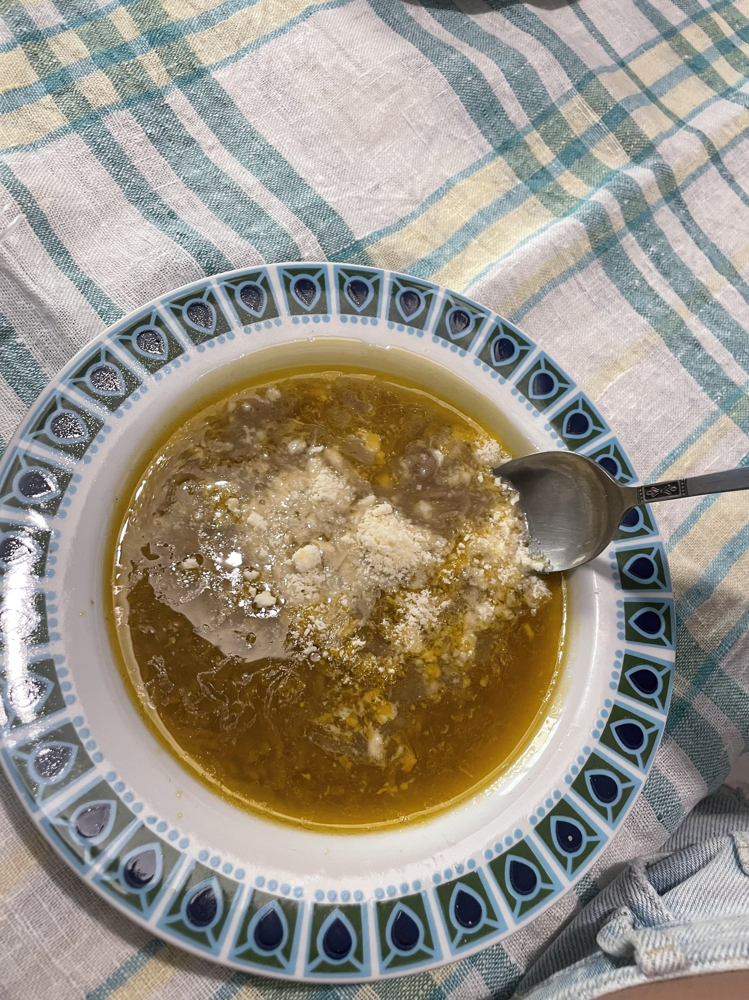

Stracciatella (sopa de caldo con huevo y parmesano)
Ingredients
2×
- 750 ml de caldo
- 2 huevos
- 2 cdas de parmesano rallado
- pizca de sal
- nuez moscada

Preparación
Paso 1
Calentar 750 ml de caldo hasta que hierva.
Paso 2
Batir 2 huevos con 2 cdas de parmesano rallado, una pizca de sal y nuez moscada.
Paso 3
Verter el huevo en el caldo removiendo con un tenedor para que se formen hebras, y cocer 1min. Servir con más parmesano por encima.